Deze handreiking biedt een uitgebreide verkenning van 3D tiling, een techniek
voor het efficiënt opslaan, serveren en visualiseren van driedimensionale
gegevens.
De handreiking begint met een algemene introductie tot 3D tiling, waarbij de
voordelen en toepassingsgebieden worden belicht. Praktijkvoorbeelden illustreren
de veelzijdigheid van 3D tiling in diverse domeinen, van GIS tot digitale
tweelingen.
Vervolgens worden de belangrijkste standaarden voor 3D tiling behandeld. De
techniek van 3D tiling wordt gedetailleerd beschreven, waaronder formaten zoals
het 3D Tiles-schema en tegelformaten.
Best practices worden gedeeld voor zowel klanten (consumers), data-aanbieders
(providers) als ontwikkelaars (developers), met aandacht voor optimalisatie van
prestaties en gebruiksgemak. Hierbij worden enkele aspecten voor het genereren,
serveren en gebruiken van 3D tiles uitgelicht.
Ten slotte bevat de handreiking een uitgebreide toolkit met referenties naar
handleidingen, clients, servers en 3D Tile datasets, waardoor lezers worden
voorzien van de nodige bronnen om aan de slag te gaan met 3D tiling in hun
projecten.
Status van dit document
Dit is een werkversie die op elk moment kan worden gewijzigd, verwijderd of vervangen door andere documenten. Het is geen stabiel document.
1. Inleiding
1.1 Aanleiding
De handreiking 3D Tiles heeft tot doel bij te dragen aan het breder gebruik van
3D data in Nederland met de adoptie van 3D Tiles in het bijzonder. Door best
practises (praktische richtlijnen) te bieden voor de implementatie van 3D Tiles,
kunnen verschillende systemen en softwareoplossingen (tools) beter met elkaar
samenwerken, wat cruciaal is voor de uitwisseling van de visualisaties van 3D
data in GIS applicaties en digital twins. Via de best practises biedt de
handreiking mogelijkheden voor bredere acceptatie en verspreiding van 3D Tiles
binnen de Nederlandse gebruiksgemeenschap en vele verschillende belanghebbende
organisaties.
Deze handreiking is tot stand gekomen door de inbreng van expertise en
ervaringen van diverse experts en ‘early adopters’ van 3D Tiles in Nederland. De
kennis en ervaringen zijn vanuit diverse publieke en private organisaties is
bijeengebracht in diverse best practises voor 3D Tiles. Door het stimuleren van
best practices en het delen van deze kennis kan de handreiking innovatie
bevorderen en nieuwe toepassingen en gebruiksscenario’s inspireren. De
handreiking 3D Tiles draagt daarmee bij aan het bevorderen van een beter begrip,
bredere adoptie en effectievere toepassing van 3D Tiles en de bijhorende
technologieën en tools. En met enkele voorbeeldtoepassingen wordt in dit
hoofdstuk de waarde van 3D data en 3D Tiles geïllustreerd.
1.2 Wat is 3D Tiling?
Simpel gezegd: 3D Tiling is een techniek waarbij tegels met drie-dimensionale
data worden geserveerd van een server naar een client.
In computer graphics en 3D visualisatie is 3D Tiling een techniek die wordt
gebruikt om grote volumes ruimtelijke data efficiënt aan te bieden via het web.
Net als bij 2D Vector Tiles, waarbij een tweedimensionaal oppervlak wordt
verdeeld in kleinere tegels voor eenvoudigere verwerking, breidt 3D Tiling dit
concept uit naar drie dimensies, waardoor het streamen van complexe 3D-datasets
mogelijk wordt.
1.3 Waar is 3D Tiling voor te gebruiken?
De toepassingen van 3D tiling bestrijken tal van domeinen, waaronder 3D
visualisaties voor stadsplanning, architectuur, gaming, virtual reality en
simulatie. Bijvoorbeeld, in georuimtelijke mapping maakt 3D tiling de
visualisatie mogelijk van gedetailleerde terreinmodellen, gebouwen en
infrastructuur in realtime of bijna-realtime omgevingen. In gaming en virtual
reality vergemakkelijkt het het renderen van meeslepende 3D-omgevingen met een
hoog niveau van detail en interactiviteit.
1.4 Wat zijn de voor- en nadelen van 3D Tiling?
3D tiling biedt aanzienlijke voordelen voor het beheren en visualiseren van
grote en complexe datasets. Door gegevens op te delen in kleinere, beheersbare
tegels, kunnen deze efficiënter gestreamd en gerenderd worden. Dit zorgt voor
betere prestaties en een responsievere weergave van de data. Standaarden zoals
3D Tiles en de OGC 3D Tiles API bevorderen de interoperabiliteit tussen
verschillende softwareplatforms, wat naadloze integratie en uitwisseling van
3D-gegevens mogelijk maakt. Bovendien zijn 3D tiling technieken flexibel
aanpasbaar aan verschillende toepassingen en omgevingen, wat ontwikkelaars en
gebruikers veel ruimte geeft voor maatwerk.
Er zijn echter ook enkele nadelen verbonden aan 3D tiling. Het implementeren van
deze oplossingen vraagt om specialistische kennis op het gebied van ruimtelijk
gegevensbeheer, rendering-algoritmen en optimalisatietechnieken, wat de
complexiteit van ontwikkelingsprojecten kan verhogen. Daarnaast kan het opslaan
van getilede datasets meer opslagruimte vereisen dan ruwe gegevensformaten,
vooral als er verschillende niveaus van detail worden gebruikt. Het tiling
proces zelf kan ook extra verwerkingskracht vereisen, wat vooral merkbaar is bij
dynamische of streamende datasets. Ten slotte kan het waarborgen van
compatibiliteit en naleving van 3D tiling standaarden over verschillende
softwareplatforms en ecosystemen uitdagingen met zich meebrengen.
Samengevat biedt 3D tiling grote voordelen voor het efficiënt beheren en
visualiseren van 3D gegevens, maar het brengt ook uitdagingen met zich mee op
het gebied van complexiteit, opslag, verwerking en standaardisatie. Door deze
uitdagingen aan te pakken en gebruik te maken van gestandaardiseerde
specificaties zoals 3D Tiles en de OGC 3D Tiles API, kunnen ontwikkelaars de
voordelen van 3D tiling benutten om de efficiëntie en effectiviteit van hun
toepassingen en workflows te verbeteren.
1.5 Welke standaarden zijn er voor 3D tiling?
Voor het serveren van 3D Tiles zijn er in het algemeen twee standaarden.
1.5.1 OGC 3D Tiles specification
OGC 3D Tiles is een OGC community standaard
voor het efficiënt streamen en renderen van grote driedimensionale
ruimtelijke datasets, waaronder 3D objecten, fotogrammetrie, BIM/CAD-modellen en puntenwolken.
Het definieert een gegevensstructuur en tegelformaten voor renderbare inhoud
zonder strikte visualisatieregels.
3D Tiles is ontwikkeld door Cesium en wordt beheerd door het Open Geospatial Consortium (OGC).
Een 3D Tiles-dataset (tileset) bevat diverse tegelformaten georganiseerd in een
ruimtelijke structuur. Het is declaratief, uitbreidbaar en geschikt voor
verschillende soorten 3D-gegevens. De tegelformaten omvatten batched
3D-modellen, geïnstantieerde 3D-modellen, puntenwolken en samengestelde tegels.
De specificatie omvat ook 3D Tile Styles voor declaratieve styling van
tegelsets. Het is een open formaat dat niet gebonden is aan specifieke
leveranciers of technologieën.
1.5.2 i3S
I3S staat voor Indexed 3D Scene Layer en is
een open standaard die is ontwikkeld door Esri voor het efficiënt opslaan, delen
en weergeven van grote en complexe driedimensionale georuimtelijke gegevens. Het
is tevens net als 3D Tiles een community standaard van het Open Geospatial Consortium (OGC) en wordt
vaak gebruikt binnen de GIS-gemeenschap.
I3S is geoptimaliseerd voor het werken met gegevens in de context van
web-gebaseerde toepassingen, waardoor het mogelijk is om grote 3D-scènes in
real-time te streamen en te visualiseren in webbrowsers of andere applicaties.
Het maakt gebruik van een combinatie van ruimtelijke indexering, tiling en
compressie om de prestaties te optimaliseren en de benodigde bandbreedte te
minimaliseren bij het overbrengen van 3D-gegevens over het web.
De I3S-specificatie omvat verschillende componenten, zoals de Scene Layer, de
Scene Layer Package en de Scene Layer Service, die samenwerken om 3D-gegevens
efficiënt te organiseren en weer te geven. Het wordt vaak gebruikt in combinatie
met Esri's ArcGIS-platform, maar is een open standaard die door andere
softwareleveranciers kan worden geïmplementeerd en gebruikt.
Noot: Scope afbakening OGC 3D Tiles
1.6 Praktijkvoorbeelden
De toepassing van 3D Tiles vinden we al terug in verschillende applicaties en 3D
digital twins. Ter illustratie zijn hieronder zijn voorbeelden opgenomen van
enkele Nederlandse toepassingen die 3D Tiles voor de 3D visualisatie gebruiken.
1.6.1 BRO circulaire grondstromen
3D Tiles worden gebruikt in de toepassing Circulaire Grondstromen (BRO
praktijkvoorbeeld) om complexe en gedetailleerde 3D informatie over grond- en
bouwmaterialen efficiënt te visualiseren en te beheren. Dit helpt bij het
monitoren, plannen en optimaliseren van het hergebruik van materialen binnen een
circulaire economie. Door 3D Tiles in te zetten, kunnen verschillende
stakeholders eenvoudig toegang krijgen tot actuele en nauwkeurige data, wat
bijdraagt aan een beter begrip van materiaalstromen en bevordert de samenwerking
tussen partijen (zie figuur 1).
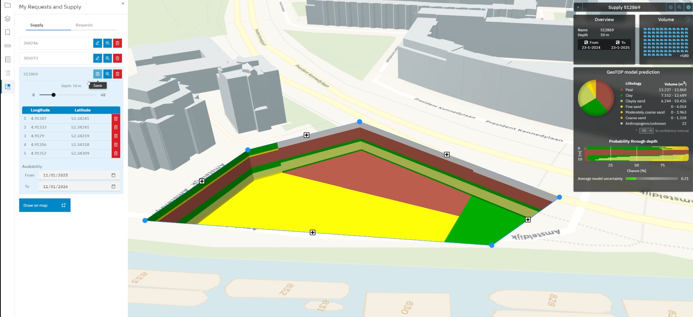Figuur 13D Tiles weergave bij BRO praktijkvoorbeeld Circulaire Grondstromen (bron: Geodan)
In de toepassing Circulaire Grondstromen gemaakt met CesiumJS
zorgt 3D Tiles ervoor dat de prestaties van de webviewer worden gemaximaliseerd.
Het proces van het converteren van data naar 3D-tegels binnen de toepassing
Circulaire Grondstromen varieert afhankelijk van de databron (zie figuur 2); de
3D tegels worden toegepast voor diverse typen data, zoals het DTB, puntenwolken,
basisregistraties en BRO modellen en orthofoto’s.
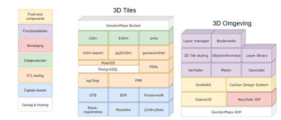Figuur 23D Tiles gebruik bij BRO praktijkvoorbeeld Circulaire Grondstromen (bron: Geodan)
De gemeente Rotterdam stelt het 3D-stadsmodel van Rotterdam vrij ter beschikking aan iedereen die daarmee aan de slag wil gaan. De gemeente wil hiermee het gebruik en toepassingen van deze unieke dataset stimuleren bij scholen en universiteiten, overheids- en Rotterdamse diensten, gamers, het bedrijfsleven uit binnen- en buitenland maar ook bewoners. Zij kunnen met de juiste tools Rotterdam op een manier in beeld brengen die op een platte kaart onmogelijk is. Rotterdam 3D is een driedimensionale (3D) weergave van de gemeente gebaseerd op tweedimensionale (2D) kaarten, hoogtemetingen, luchtfoto’s en beheergegevens. Rotterdam 3D (zie figuur ?) maakt gebruik van 3D Tiles en bestaat niet alleen uit gebouwen. Ook bomen, lantaarnpalen en kabels en leidingen zijn inmiddels in 3D en via 3D Tiles beschikbaar. Tilesets van Rotterdam 3D zijn ook te downloaden via link. Het toegankelijk maken van Rotterdam 3D biedt Rotterdammers de mogelijkheid mee te bouwen aan de stad. De gegevens zijn daarom compleet, actueel en gratis voor hergebruik.
In de onderstaande figuren zijn enkele voorbeelden opgenomen van het 3D Tiles in Rotterdam 3D. In figuur 3 zijn de getextureerde gebouwen tezamen met de getextureerde bomen op een luchtfoto afgebeeld. Hierdoor creëer je al snel een ‘realistisch’ digitaal beeld van de stad.
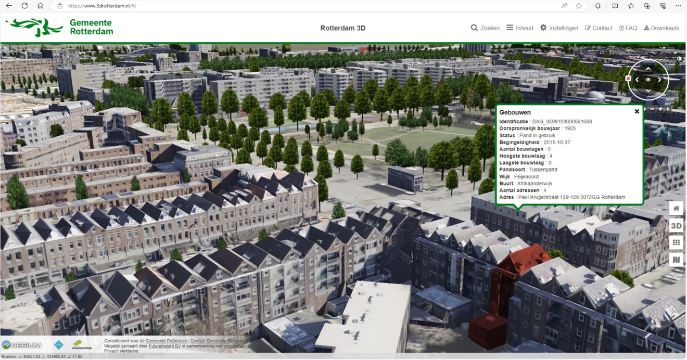Figuur 33D Tiles visualisatie van getextureerde gebouwen en bomen in Rotterdam 3D
Benieuwd of er nog een plaatsje vrij is onder de straat voor een ondergrondse vuilcontainer? 3D Rotterdam biedt de mogelijkheden voor een kijkje in de ondergrond (figuur 4).
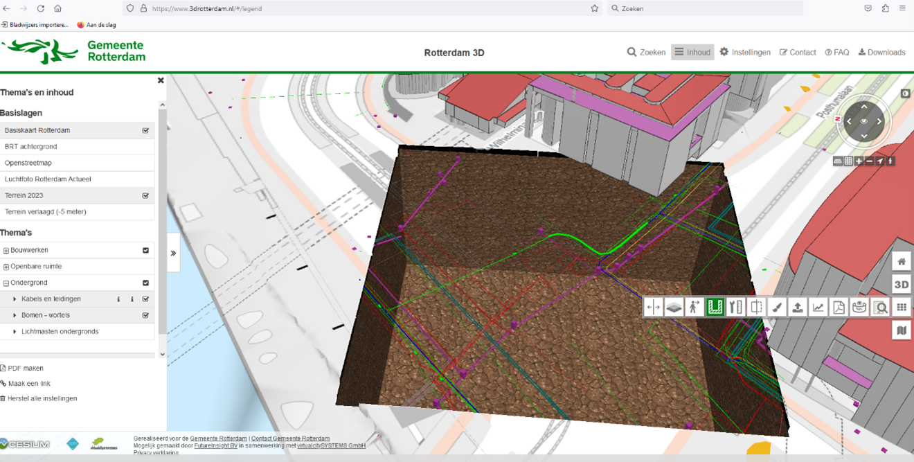Figuur 4Een 3D Tiles kijkje in de Rotterdamse ondergrond
Met behulp van een 3D viewer, die alleen beschikbaar is voor de medewerkers van de gemeente Rotterdam, zorgt 3D Tiles ervoor dat de medewerkers snel en intuïtief gegevens kunnen ophalen van assets in de stad. Dit behelst niet alleen gebouwen maar ook straatmeubilair, groenvoorziening, etc.. Vanuit het gemeentelijk datafundament, waarin onder andere de BAG, de BGT, de WOZ, de TIR en de BOR zijn opgenomen, kunnen data analyses in samenhang worden uitgevoerd en vragen worden beantwoord, zoals hoeveel hoekwoningen een wijk heeft (figuur 5) of welke panden bevatten specifieke materialen in het dak? Ook het vergelijken van panden en hun attributen uit verschillende registraties WOZ en BAG: Welke object pas niet in het rijtje? (figuur 5).
De 3D tilesets bevatten ook panden als geheel en kunnen de verblijfsobjecten in de toekomst ook identificeren en informatie over de verblijfsobjecten opvraagbaar maken (zie figuur 6).
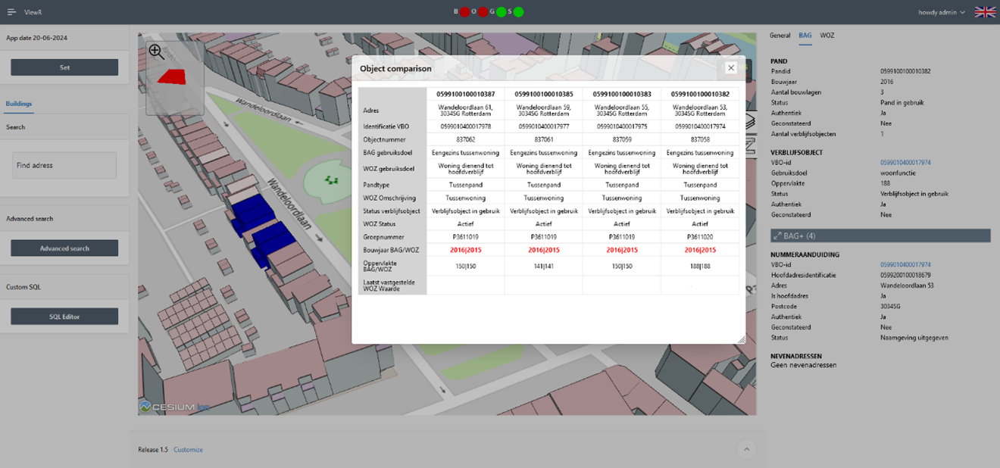Figuur 63D Tiles ingezet voor het vergelijken van pandattributen uit WOZ en BAG
De hydrodynamische modelleringssoftware 3Di wordt, onder andere, gebruikt voor het voorspellen van wateroverlast. De software kan de effecten van hevige neerslag, en of een dijkdoorbraak in kaart brengen. . De rekenmodellen zijn opgebouwd uit gedetailleerde 2D informatie, zoals de hoogte van het maaiveld. Maar kunnen ook uitgebreid worden met 1D om bijvoorbeeld in de stad de riolering op een goede manier mee te nemen. Deze combinatie levert een hoge nauwkeurigheid en vergroot de toepasbaarheid.
Met behulp van 3D Tiles kan wateroverlast gevisualiseerd in een realistische 3D omgeving waardoor ook niet-water-experts deze resultaten gemakkelijk kunnen interpreteren (zie figuur 7). Denk hierbij aan bv besluitvormers die ten tijde van een calamiteit onder grote druk keuzes moeten maken. Beleidsmakers die door de steeds meer integrale aanpak met meerdere domeinen te maken krijgen. Maar ook aan burgers die geïnformeerd worden over beleid en waarbij de 3D omgeving ook kan ondersteunen in het vegroten van klimaatbewustzijn.
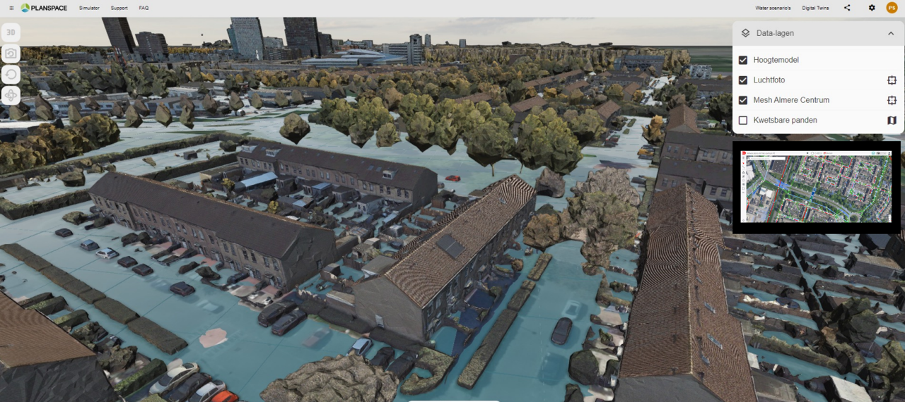Figuur 73D Tiles ingezet voor het weergegeven van waterhoogtes (bron: Imagem)
Om deze 3D Tiles te kunnen gebruiken moeten de waterhoogte die 3Di voorspelt omgezet worden in ruimtelijke objecten die gerepresenteerd kunnen worden als 3D Tiles. De waterhoogte die 3Di voorspelt beschrijft de waterhoogte in een vierkant gebiedje. Door middel van interpolatie en triangulatie wordt dit omgezet in een 3D mesh en deze mesh wordt dan gerepresenteerd als 3D Tiles. Deze stappen kunnen worden uitgevoerd tijdens of na de simulatie voor iedere tijdsstap die gesimuleerd wordt.
Wanneer deze 3D Tiles zijn gegenereerd worden deze weergegeven in de 3D representatie van de omgeving. Er is gekozen om zo min mogelijk styling informatie aan de 3D Tiles toe te voegen; dit wordt overgelaten aan de visualisatiesoftware. Door hierin dezelfde hoogtekaart te gebruiken als in de simulatie zal alleen water dat boven het maaiveld uitkomt zichtbaar zijn. De resultaten van meerdere tijdstappen zijn beschikbaar waardoor het verloop van de wateroverlast over de tijd gevisualiseerd kan worden. Dit geeft inzicht in de duur van de overlast en de snelheid waarmee de overlast verdwijnt.
Voor het bepalen van de status van de verschillende assets van Rijkswaterstaat,
worden planimetrische en hoogte-informatie gecombineerd (3D) toegepast. Een
voorbeeld hiervan is het schouwen, inwinnen en valideren van de vrije ruimtes
tussen het wegdek en een asset binnen het brongebied van RWS. Dit doet RWS in
opdracht van de RDW, en zorgt ervoor dat er een veilige doorgang gegarandeerd is
voor persoon, vracht en speciaal vervoer. RWS voert zelf geen data inwinning
uit, en is daarom afhankelijk van de data die geleverd wordt vanuit de
leveranciers.
Hiervoor zijn er eisen gesteld aan de vrije ruimtes, waarbij voor de
hoogtemetingen een relatieve afwijking van 1 cm is vastgesteld (zie ook bronen onder).
Omdat deze metingen vaak op snelwegen worden uitgevoerd, kiezen leveranciers
steeds vaker voor het inwinnen van de vrije ruimte met behulp van mobile
laserscanning. Mede doordat dit een efficiënte en veilige methode van inwinning
is. De meting resulteert in een puntenwolk dataset van een asset, waarna de
vrije ruimtes vervolgens worden geconverteerd naar fotobestanden voor een
weergave van de omgeving.
Voor het valideren van de fotobestanden van de leverancier wordt gebruikgemaakt
van 3D-software die ontwikkeld is door de TU Delft en Rijkswaterstaat (zie bronnen onder).
Deze software wordt ingezet om met alternatieve puntenwolken
vergelijkingsmateriaal van hetzelfde asset te maken. Dit stelt Rijkswaterstaat
in staat om het geleverde fotomateriaal te controleren en te verifiëren of de
omschrijvingen in de bewijsvoering (kwaliteitsrapportage) overeenkomen.
De software is gebaseerd op het feit dat het wegdek en het brugdek/portaal
voldoende gesegmenteerd kan worden uit de data, en dat doormiddel van B-splines
een schatting gemaakt kan worden van de onderkant van het object. De resultaten
kunnen op twee manieren worden weergegeven: via de dwarsdoorsnede (figuur 8A) of
doormiddel van de voxels van het gehele wegdek (figuur 8B).
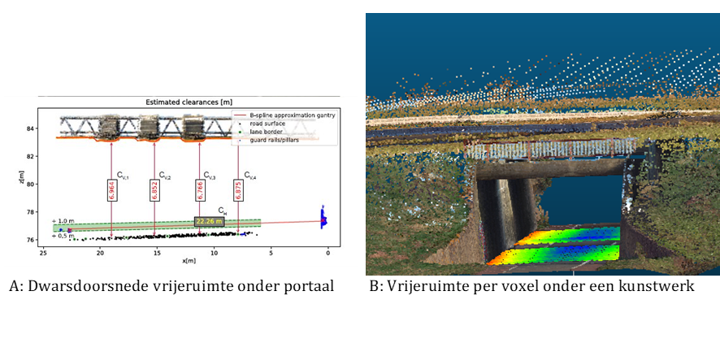Figuur 83D Tiles weergave van het wegdek via dwarsdoorsnede en voxels van het gehele wegdek (bron: Rijkswaterstaat)
Figuur B laat het belang zien van het ontsluitingsvraagstuk van dit type dataset
naar de verschillende projectteams en afdelingen binnen Rijkswaterstaat. Dit
stelt een projectteam in staat om een schatting te maken van de verandering van
een asset over tijd, zodat gerichte data inwinning kan plaatsvinden in opdracht
van RWS wanneer een asset zich in een kritieke toestand bevindt. Daarnaast
krijgt de gebruiker ook een inschatting in 3D om te bepalen of een speciaal
transport zich veilig door Nederland kan verplaatsen.
Dit hoofdstuk geeft een beschrijving van de belangrijkste onderdelen van de OGC
3D Tiles standaard.
2.1 Introductie
De OGC 3D Tiles-standaard is een set regels voor het organiseren en visualiseren
van 3D-gegevens. Het vertelt ons hoe tegelsets, die informatie over de locatie,
details en uiterlijk van de gegevens bevatten, moeten worden opgebouwd. Deze
tegelsets zijn gestapeld op elkaar en worden slim gebruikt om gegevens op
verschillende gedetailleerde niveaus weer te geven. Bovendien definieert de
standaard de ondersteuning voor verschillende gegevenstypen, waaronder
geometrie, texturen en metadata, en biedt het richtlijnen voor mediatypes en
encoding.
Naast het tegelsetformaat omvat de standaard specificaties voor het beheren van
ruimtelijke queries, zoals het bepalen van de zichtbaarheid van tegels op basis
van hun geometrische fout en het dynamisch laden van tegels op basis van de
kijkafstand van de gebruiker. Ook biedt het richtlijnen voor
implementatiedetails, zoals het gebruik van UTF-8-encoding voor JSON-bestanden
en unieke sleutels voor eigenschappen binnen JSON-objecten.
2.2 Tegelset
In 3D Tiles verwijst een tegelset (tileset) naar een verzameling tegels
georganiseerd binnen een ruimtelijke gegevensstructuur, vertegenwoordigd door
een boom. Elke tegelset wordt beschreven door minstens één JSON-bestand met
metadata en een hiërarchie van tegelobjecten, waarvan elke tegel renderbare
inhoud kan bevatten.
2.3 Tegelformaten
Het primaire tegelformaat voor 3D Tiles is glTF 2.0, een open specificatie
ontworpen voor efficiënte transmissie en laden van 3D-inhoud. Dit formaat omvat
geometrie, textuurinformatie en kan worden uitgebreid met metadata,
model-instanciëring en compressie. Het ondersteunt verschillende soorten
3D-inhoud zoals 3D-modellen (figuur 9) en puntenwolken.
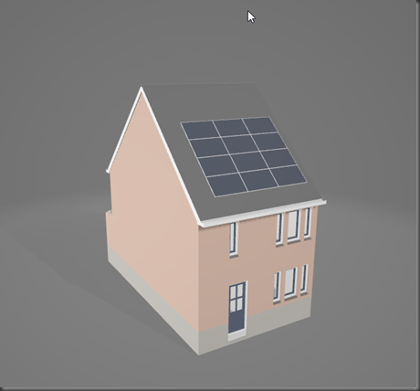Figuur 93D model van een huis in glTF 2.0 formaat
Naast glTF ondersteunt 3D Tiles ook de volgende tegelformaten:
1. Batched 3D Model (b3dm): Dit formaat wordt gebruikt voor heterogene
3D-modellen.
2. Instanced 3D Model (i3dm): Gebruikt voor het instanceren van 3D-modellen,
zoals bomen, windmolens, en bouten.
3. Point Cloud (pnts): Voor het weergeven van grote aantallen punten in een
puntenwolk.
4. Composite (cmpt): Hiermee kunnen tegels van verschillende formaten worden
samengevoegd tot één tegel.
2.4 Mediatypes en encoding
Het 3D Tiles-bestandsformaat gebruikt verschillende mediatypes en encoding, zie
onderstaande tabel.
Extensie
Media Type
Toepassing
.json
application/json
tegelset-, metagegevensschema-, tegelsetstijl- en JSON-subtree-bestanden
.subtree
application/octet-stream
binaire subtree-bestanden
.bin
application/octet-stream
binaire bufferbestanden
JSON-bestanden gebruiken UTF-8-encoding zonder BOM, met ASCII-tekenreeks-charset
en unieke sleutels; niet-ASCII-tekens worden geëscapet volgens RFC 8259, Sectie
6.
2.5 Geometric error
In een 3D-omgeving worden tegels georganiseerd in een boomstructuur, waarbij
elke tegel verschillende niveaus van detail vertegenwoordigt om te bepalen hoe
gedetailleerd een tegel moet worden weergegeven. Deze tegelsets zijn
verzamelingen van tegels die samen een groter oppervlak vormen, terwijl
kindertegels kleinere tegels binnen een grotere tegel zijn die helpen bij het
opbouwen van gedetailleerde structuren.
De geometrische fout van een tegel vertelt ons hoe nauwkeurig de vorm van die
tegel overeenkomt met het originele object, gemeten in meters.
Bij het bekijken van een 3D-scène op een apparaat, wordt de geometrische fout
van elke tegel geëvalueerd. Als de fout binnen een aanvaardbaar bereik ligt,
wordt de tegel getoond. Als de fout te groot is, wat betekent dat de tegel niet
gedetailleerd genoeg is, wordt de tegel verfijnd door gedetailleerdere
kindertegels te laden en te tonen.
De grootte van de fout (geometric error) hangt af van hoe belangrijk het is om
de details van het object nauwkeurig weer te geven (figuur 10). Een hogere fout betekent dat
het programma eerder beslist om de tegel te verfijnen en de details weer te
geven.
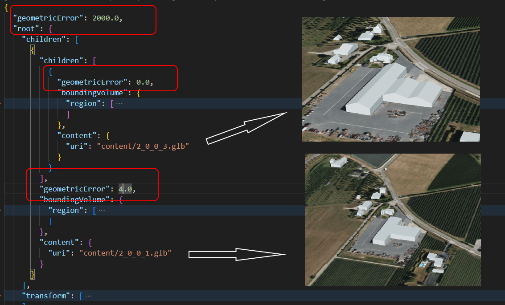Figuur 10Geometric error gedefinieerd in tileset.json, voor panden met verschillend detail niveau
2.6 Implicit tiling
Implicit tiling in 3D Tiles is een methode om 3D-gegevens op een gestructureerde
en efficiënte manier te organiseren. Het verdeelt de gegevens in een regelmatig
patroon van tegels, vergelijkbaar met hoe een mozaïek is opgebouwd. Hierdoor
kunnen gebruikers snel en eenvoudig specifieke tegels identificeren en
benaderen, wat vooral handig is bij het werken met grote 3D-omgevingen. Explicit
tiling daarentegen is een techniek waarbij een oppervlak wordt bedekt met vooraf
gedefinieerde tegels, in plaats van tegels die dynamisch worden gegenereerd.
Implicit tiling vereenvoudigt quadtrees en octrees in 3D Tiles, waardoor snelle
toegang mogelijk is via tegelcoördinaten. Dit verbetert ruimtelijke queries,
doorloopalgoritmen en updates van tegels.
Bovendien maakt implicit tiling betere interoperabiliteit mogelijk met bestaande
GIS-gegevensformaten met impliciet gedefinieerde tegelindelingen, zoals TMS,
WMTS, S2 en CDB.
Om grote hoeveelheden gegevens efficiënt te beheren, worden tegels gecreëerd en
georganiseerd op basis van bijbehorende metadata. Bij zeer omvangrijke datasets
wordt deze metadata opgedeeld en verdeeld in subtrees met een vast formaat. Deze
subtrees bevatten informatie over welke tegels aanwezig zijn en welke inhoud ze
bevatten, waardoor het beheer van de dataset geoptimaliseerd wordt.
Een implicitTiling-object kan worden toegevoegd aan tegels in het JSON-bestand
van de tegelset. Hiermee wordt bepaald hoe de tegel wordt verdeeld en waar
inhoud is opgeslagen. Het kan aan meerdere tegels worden toegevoegd voor
complexere indelingen. De implementatie van deze tegels omvat details zoals
verschillende verdeelschema's, strategieën voor verfijning en toegang tot
inhoud.
2.7 Metadata
De OGC 3D Tiles specificaties beschrijven uitgebreide metadata om 3D-tiles
efficiënt te beheren en weer te geven. Deze metadata omvat diverse aspecten
zoals:
Geografische locatie: Informatie over de precieze positie van een tegel in
een geografisch coördinatensysteem. Dit kan details bevatten zoals de
noord-, zuid-, oost- en westgrenzen van de tegel.
Schaal en resolutie: Details over de schaal en resolutie van de tegel, die
aangeven hoe gedetailleerd de informatie binnen de tegel is. Dit helpt bij
het selecteren van de juiste tegels voor verschillende zoomniveaus.
Niveaus van detail (LOD): Informatie over de verschillende niveaus van
detail die binnen een tegel beschikbaar zijn, waardoor systemen kunnen
kiezen hoe gedetailleerd ze een gebied weergeven op basis van de beschikbare
resources en de benodigde nauwkeurigheid.
Relaties tussen tegels: Metadata die de hiërarchie en relaties tussen
tegels beschrijft, zoals ouder-kind-relaties tussen grotere tegels en hun
kleinere kindertegels. Dit helpt bij het efficiënte beheer van tegels en het
navigeren door de tegelstructuur.
Tegel identificatie: Unieke aanduidingen (identificaties) voor elke tegel,
wat essentieel is voor het beheren en opvragen van specifieke tegels binnen
een groot 3D-tiling systeem.
Bounding volumes: Informatie over de 3D-grenzen van een tegel, zoals
bounding boxes of bounding spheres, die helpen bij het snel bepalen van
zichtbaarheid en bij het uitvoeren van ruimtelijke queries.
Formatinformatie: Details over het bestandsformaat en de compressie van de
tegelgegevens, wat belangrijk is voor de juiste interpretatie en weergave
van de tegels.
3. Best practices
Dit hoofdstuk beschrijft een aantal best practices voor het serveren en
gebruiken van 3D tiles. Deze best practices zijn gebaseerd op de expertise en
praktijkervaring van de auteurs met betrekking tot het genereren, serveren en
gebruiken van 3D-tiling, zoals beschreven in deze handleiding
De best practices zijn beschreven aan de hand van vier onderwerpen (zie figuur 11):
3.1 <<<<<<< Updated upstream
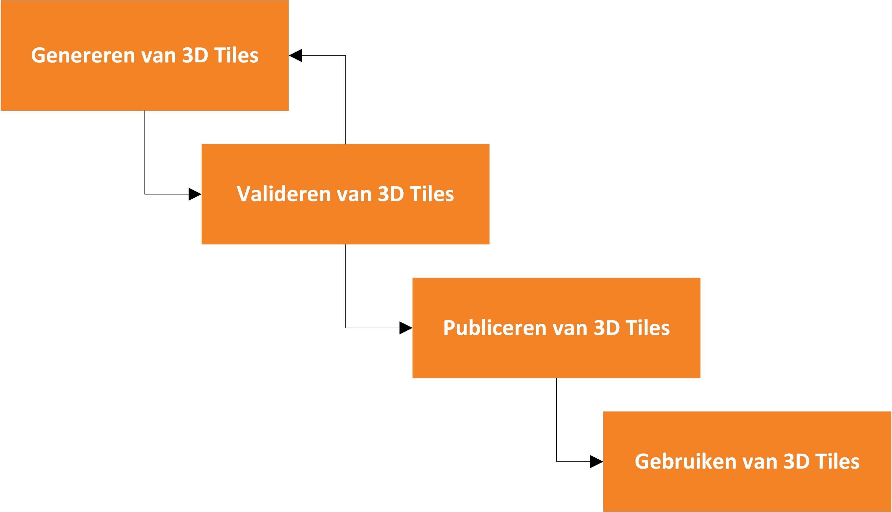
>>>>>>> Stashed changes
Figuur 12Het werken met 3D Tiles
Genereren van 3D Tiles
<<<<<<< Updated upstream
Attribuutgegevens:
Gebruik van attribuutgegevens voor het verrijken van de 3D tiles en het
verbeteren van de visualisatie.
Stashed changes
Gebruik van dieptevlakken voor correcte rendering van tiles in
3D-omgevingen.
3.1.1 Genereren van 3D Tiles
3.1.1.1 Attribuutgegevens
Neem alleen de attributen op die nodig zijn voor visualisatie of voor het
opvragen van extra informatie via een andere server.
Het zorgvuldig kiezen van welke attributen worden opgenomen in 3D Tiles-datasets
is van belang voor efficiënt gegevensbeheer. Door enkel de essentiële attributen
toe te voegen, wordt onnodige gegevensuitwisseling voorkomen, wat de prestaties
verbetert en de netwerkbelasting vermindert. Daarnaast kan het selectief opnemen
van attributen waarop veelvuldig gefilterd wordt helpen bij het optimaliseren
van de dataset voor specifieke gebruiksscenario's.
Het opvragen van extra informatie via een andere server op basis van een unieke
identificatie biedt real-time toegang tot actuele gegevens. Dit is vooral
gunstig bij dynamische datasets, waarbij voorkomen wordt dat 3D Tiles
herhaaldelijk gegenereerd moeten worden, of in situaties waar een hoge mate van
actualiteit vereist is, zoals bij bepaalde publieke taken, zoals het verstrekken
van toeslagen of vergunningen.
Bovendien maakt deze aanpak gecontroleerde toegang mogelijk op basis van
autorisatie, waardoor bijvoorbeeld de privacy en beveiliging van
persoonsgegevens worden gewaarborgd.
3.1.1.2 Explicit en implicit tiling
Pas implicit tiling toe voor grotere datasets.
Bij het kiezen tussen implicit en explicit tiling is het belangrijk om te
beseffen dat de keuze sterk afhankelijk is van de specifieke
implementatiedetails aan zowel de generatie- als de gebruikerskant (de
webviewer).
In het algemeen kan gesteld worden dat:
Implicit tiling interessant is, vooral voor grote datasets.
Het aan te raden is om zowel implicit als explicit tiling te testen voor de
beoogde toepassing. Dit komt omdat de ondersteuning voor implicit tiling nog
steeds evolueert en zelfs populaire platforms zoals Cesium nog enkele
uitdagingen hebben, vooral bij zeer grote datasets.
Door beide tiling-methoden te testen, kan de beste keuze worden gemaakt op basis
van de specifieke behoeften en omstandigheden van een project.
Voor terreinen, zoals landschappen en terreinmodellen, is explicit tiling
vaak geschikt omdat ze vaak grote, uitgestrekte gebieden beslaan met een
relatief uniforme geometrie. Hierdoor kunnen terreinen efficiënt worden
opgedeeld in regelmatige tegels, waardoor snelle toegang en weergave op
verschillende detailniveaus mogelijk is. Deze regelmatige structuur maakt
het ook gemakkelijker om te navigeren en details te renderen op basis van de
afstand tot de kijker.
Aan de andere kant zijn gebouwen vaak complexe structuren met verschillende
vormen, maten en details. Voor gebouwen kan implicit tiling gunstig zijn
omdat het meer flexibiliteit biedt in het opdelen van de gegevens op basis
van de geometrische complexiteit. Dit maakt het mogelijk om gebouwen op te
delen in tegels die zich aanpassen aan de vorm van het gebouw en de
detailniveaus, wat efficiënter kan zijn voor de opslag en rendering van
complexe(re) gebouwen.
Daarnaast is er ook een alternatief voor implicit tiling: explicit tiling met
externe tilesets. Dit kan ook een goede optie zijn voor grote datasets. Net als
bij implicit tiling wordt hiermee de grootte van het tileset.json-bestand
significant kleiner. Dit bestand moet namelijk volledig worden ingelezen voordat
er iets in de viewer kan worden getoond. De grootte van dit tileset.json-bestand
is cruciaal voor een goede prestatie bij het laden van de 3D-tiles dataset. Als
dit bestand te groot is, kan het enkele seconden duren voordat het geladen is,
wat de gebruikerservaring niet ten goede komt.
Nog enkele aandachtspunten en technische details:
Implicit tiling is minder flexibel wat betreft de tegelmethode, omdat het
alleen quadtree of octree kan zijn. Dit betekent onder andere dat je niet
per tegel de hoogte precies kunt instellen op het hoogste gebouw in de
tegel, wat weer implicaties kan hebben voor de prestaties in de viewer.
Er is minder controle over de geometrische fout bij implicit tiling. Deze
wordt namelijk altijd door 2 gedeeld voor een volgend tegelniveau.
Wat betreft prestaties hangt veel af van hoe de subtrees in implicit tiling
worden gegenereerd en hoe ze worden geconsumeerd in de viewer.
Let op: standaard 1.0 ondersteunt geen implicit tiling, vanaf 1.1 wel. Veel
clients zitten nog op 1.0, dus implicit tiling is niet in elke client
beschikbaar.
3.1.1.3 Geometric error
Kies een drempelwaarde voor geometric error op basis van het gewenste zoom-
en detailniveau.
De geometrische fout (geometric error) van een tegel wordt gebruikt in 3D
Tiles om te bepalen hoe gedetailleerd een tegel moet worden weergegeven. De
grootte van de fout hangt af van hoe belangrijk het is om de details van het
object nauwkeurig weer te geven, waarbij een hogere fout betekent dat het
programma eerder beslist om de tegel te verfijnen en de details weer te geven.
Voor verschillende toepassingen zijn verschillende drempelwaarden voor de
geometric error van LOD-modellen van belang. Voor gebouwen op LOD2 zou een
drempelwaarde tussen 1 en 10 meter geschikt zijn. Bij terreinmodellen op LOD1,
bekeken op een schaal van 1:10.000, zou een drempelwaarde tussen 10 en 50 meter
passend zijn. Voor een schaal van 1:50.000 zou een waarde tussen 50 en 100 meter
geschikt zijn. Deze drempelwaarden zijn afhankelijk van verschillende factoren
zoals het beoogde gebruiksscenario, beschikbare rekenkracht en gewenste visuele
kwaliteit. Zo biedt een lagere geometric error meer detail, maar vereist het
meer rekenkracht. Het is cruciaal om de optimale drempelwaarde te bepalen op
basis van specifieke tests en evaluaties, rekening houdend met de vereisten van
het project en de doelsystemen.
Bij implicit tiling wordt de geometrische fout deels vastgesteld. Je stelt een
waarde in voor de root tegel, en deze waarde wordt vervolgens eenvoudigweg door
2 gedeeld voor elk volgend niveau onder de root tegel. Bij explicit tiling
daarentegen kun je de geometrische fout afzonderlijk instellen voor iedere
tegel.
3.1.1.4 Offset Z-coördinaat
Stem de offset van de Z-coördinaat van 3D Tiles af op het specifieke
coördinatensysteem of op die van andere 3D Tiles datasets.
Het is belangrijk om ervoor te zorgen dat de offset van de Z-coördinaat correct
wordt toegepast om eventuele verticale verschuivingen tussen het
coördinatensysteem van het model en het gewenste referentiesysteem te
corrigeren. Dit kan bijvoorbeeld nodig zijn om het model op de juiste hoogte
boven het maaiveldoppervlak te plaatsen of om ervoor te zorgen dat het model
correct uitgelijnd is met andere lagen.
Het bepalen van de juiste offsetwaarde vereist meestal enige kennis van het
coördinatensysteem van het model en het gewenste referentiesysteem, evenals
eventuele verschillen in hoogteniveaus tussen die systemen (figuur 12). Het is aan te raden
om de offset zorgvuldig te kalibreren en te testen om ervoor te zorgen dat het
model nauwkeurig wordt gepositioneerd in de gewenste context.
Let op! De aarde is niet plat. Bij het gebruik van 3D-tile viewers zoals
Cesium wordt de hoogte bepaald ten opzichte van de ellipsoïde, terwijl
hoogten in Nederland worden gemeten ten opzichte van de geoïde van het
Normaal Amsterdams Peil (NAP). Dit verschil kan resulteren in een verschil
in hoogtemeters tussen de geoïde en de ellipsoïde.
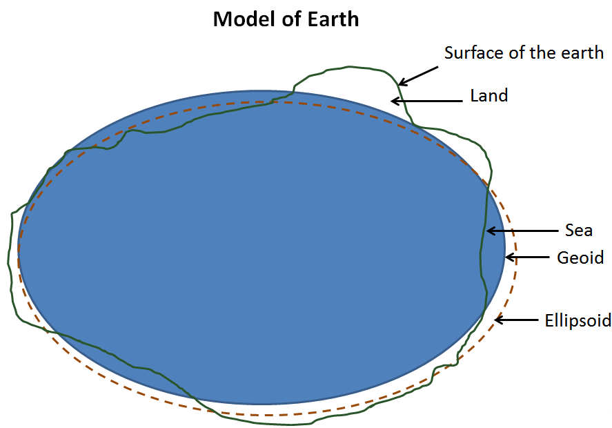Figuur 13Hoogtebepaling verschillen bij gebruik ellipsoïde ten opzichte van de geoïde
Het is belangrijk om hiermee rekening te houden bij het visualiseren van
3D-data, aangezien de hoogtecorrectie kan variëren, zelfs binnen Nederland.
Onderstaande figuur 13 toont het hoogteverschil tussen NAP-geoide en WGS84
ellipsiode in Nederland. Het gebruik van dit hoogteverschil als Z-offset is vaak
noodzakelijk om nauwkeurige hoogtevisualisaties te garanderen.
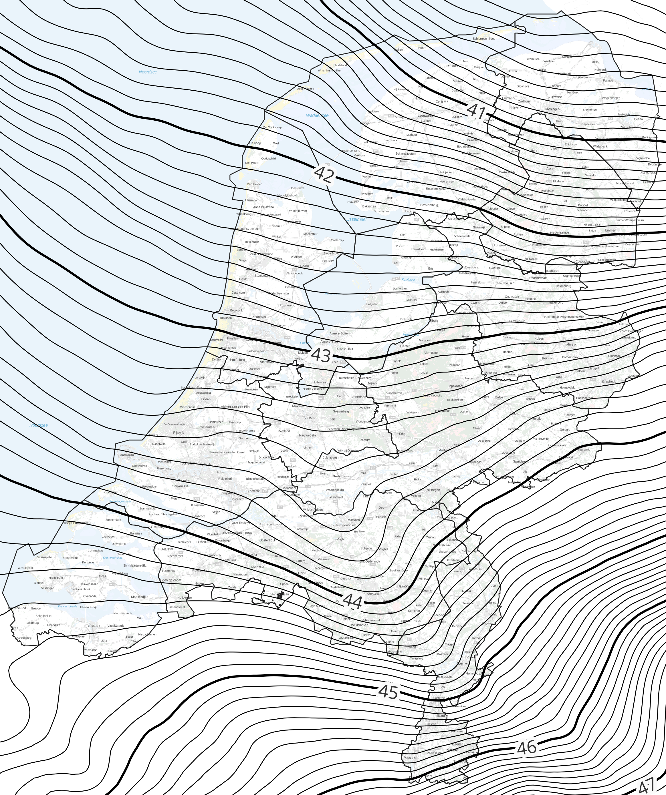Figuur 14Het hoogteverschil tussen NAP-geoide en WGS84 ellipsiode in Nederland
3.1.1.5 Optimale set aan parameters
Experimenteer met de optimale parameters voor o.m. LODs, zoomlevels en
generalisatie voor 3D Tiles generatie.
Een best practice bij het genereren van 3D-tilesets is het zorgvuldig finetunen
van verschillende parameters om optimale visualisaties te verkrijgen. Parameters
zoals levels, CityGML Level of Detail (LoD), refinement, object size filter,
geometry generalization en textures zijn van invloed op de weergave in de
viewer. Er is geen universele set instellingen, omdat deze afhankelijk zijn van
de inputdata, visuele presentatie en persoonlijke voorkeur.
Levels: Kies op welk zoomniveau de tileset wordt gegenereerd. Levels 14,
15 en 16 worden vaak gebruikt, waarbij het laagste level als eerste wordt
geladen in een viewer.
CityGML Level of Detail: Kies het gewenste detailniveau voor gebouwen
(LoD1 of LoD2) die in de CityGML-data beschikbaar zijn. Stel indien mogelijk
een fallback LOD in voor het geval het voorkeursniveau niet beschikbaar is.
Refinement: Kies tussen Add en Replace om de tileset te verfijnen. Bij
Add wordt de tileset opgebouwd per zoomniveau, terwijl bij Replace elk
gebouw op elk zoomniveau wordt gegenereerd.
Object size filter: Stel voor elk zoomniveau een objectgrootte in op
basis van de diagonaal van het object om de zichtbaarheid van gebouwen op
verschillende afstanden te optimaliseren.
Geometry generalization: Pas generalisatie toe op de geometrie om de
grootte van de tileset te verminderen. Dit is vooral handig bij het
vervangen van refinement.
Textures: Kies texturen op basis van CityGML-appearance, een enkele
kleur of specificeer kleuren op basis van CityGML-klassen. Stem de kwaliteit
van texturen af op het zoomniveau voor optimale prestaties.
Door deze parameters zorgvuldig af te stemmen, kunnen 3D Tilesets optimaal
worden gegenereerd voor verschillende toepassingen en gebruiksscenario's. Het is
belangrijk om te experimenteren en de instellingen aan te passen op basis van de
input-data, visuele presentatie en persoonlijke voorkeur.
3.1.1.6 Shader
Kies voor Physically Based Rendering (PBR) als shader voor 3D Tiles.
Het gebruik van PBR-shaders voor 3D Tiles biedt een toekomstbestendige oplossing
voor het creëren van hoogwaardige en realistische 3D-modellen. PBR-shaders zijn
gebaseerd op fysische principes van lichtinteractie, wat resulteert in visueel
consistente weergaven van materialen onder verschillende
belichtingsomstandigheden. Deze benadering zorgt ervoor dat je 3D-modellen er
realistisch uitzien in zowel huidige als toekomstige renderomgevingen en
softwareplatforms.
Niet alle shaders zijn echter even toekomstbestendig. Traditionele shaders die
gebaseerd zijn op ad-hoc benaderingen van materiaalweergave kunnen snel
verouderd raken en moeilijk te onderhouden zijn naarmate nieuwe
renderingtechnologieën evolueren. Het kiezen van PBR als shader voor 3D Tiles
garandeert niet alleen een hoog niveau van visuele kwaliteit, maar biedt ook een
flexibele basis voor aanpassingen en updates in de toekomst.
3.1.1.7 Formaat
Kies GLB als het juiste formaat voor 3D-tiles
GLB, wat staat voor GL Transmission Format Binary, is de gecomprimeerde variant
van GLTF (GL Transmission Format). glTF 2.0 is het primaire tegelformaat voor 3D
Tiles vanaf versie 1.1.
In vergelijking met B3DM heeft GLB verschillende voordelen. Ten eerste wordt
B3DM uitgefaseerd, wat betekent dat het mogelijk niet langer wordt ondersteund
in toekomstige software-updates en ontwikkelingen. Dit kan leiden tot
compatibiliteitsproblemen en beperkte interoperabiliteit met nieuwe platforms en
tools. Dit maakt GLB een toekomstbestendige keuze.
Daarnaast is GLB over het algemeen compacter en efficiënter gecomprimeerd dan
B3DM, wat resulteert in kleinere bestandsgroottes en snellere overdrachtstijden.
Dit maakt het bijzonder geschikt voor webgebaseerde toepassingen en mobiele
platforms waar bandbreedte en laadtijden van cruciaal belang zijn.
Door te kiezen voor GLB vermijdt men potentiële complicaties en
compatibiliteitsproblemen die kunnen ontstaan bij het gebruik van verouderde
formaten zoals 3BM. Dit maakt GLB een verstandige keuze voor het
toekomstbestendig opslaan en uitwisselen van 3D-gegevens.
3.1.1.8 Compressie
Gebruik geometriecompressie in GLB-bestanden
Om de prestaties van een 3D Tiles-viewer te verbeteren, raden we aan om
geometriecompressie te gebruiken voor GLB-bestanden. Draco en meshopt zijn beide
populaire tools voor geometriecompressie die kunnen helpen om de bestandsgrootte
van een GLB-bestanden aanzienlijk te verkleinen, terwijl de visuele kwaliteit
behouden blijft. Door geometriecompressie toe te passen, kan de laadtijd van
3D-modellen verkorten en de algehele prestaties van 3D Tiles-viewer verbeteren.
Om de laadtijd van een 3D Tiles verder te verbeteren, raden we aan om
gzip-compressie toe te passen bij het serveren van de 3D Tiles, met name voor
het tileset.json-bestand. Gzip-compressie kan de bestandsgrootte aanzienlijk
verminderen, waardoor de downloadtijd wordt verkort zonder afbreuk te doen aan
de kwaliteit van de gegevens. Dit helpt bij het optimaliseren van de prestaties
van een 3D Tiles-viewer, vooral bij het laden van grote en complexe datasets.
3.1.2 Valideren van 3D tiles
Valideer de 3D Tilesets
Het is sterk aan te raden om 3D Tilesets te valideren voordat ze worden
geserveerd. Het gebruik van een tool zoals de 3D Tiles Validator
(https://github.com/CesiumGS/3d-tiles-validator) kan helpen bij het
identificeren van mogelijke fouten in tilesets voordat ze worden geïntegreerd in
een applicatie. Door Tilesets te valideren, kunnen potentiële problemen met de
gegevenskwaliteit, structuur of prestaties opsporen en corrigeren, wat
resulteert in een betere gebruikerservaring en soepele werking van een 3D
Tiles-viewer.
3.1.3 Publiceren van 3D Tiles
3.1.3.1 OGC API GeoVolumes
Serveer 3D Tiles met behulp van OGC API GeoVolumes
Om 3D Tiles efficiënt te serveren met de OGC API GeoVolumes, implementeert u
eerst de OGC API GeoVolumes op de server. Zorg ervoor dat de 3D Tiles-datasets
correct zijn gegenereerd en georganiseerd volgens de specificaties van de OGC
API GeoVolumes. Publiceer vervolgens de 3D Tiles-datasets op een server volgens
de OGC API GeoVolumes-specificaties, waarbij de endpoints correct geconfigureerd
moeten zijn voor gemakkelijke toegang tot de gegevens door gebruikers.
3.1.3.2 Metadata
Publiceer metadata van een 3D Tileset
Het publiceren van metadata van een 3D Tileset, bijvoorbeeld in het Nationaal
Georegister, is essentieel voor het bevorderen van het gebruik en de
vindbaarheid van gegevens.
Het is belangrijk om relevante informatie op te nemen, zoals:
Coördinatenreferentiesysteem: Beschrijf het coördinatenreferentiesysteem dat
wordt gebruikt voor de 3D Tileset, inclusief de gebruikte eenheden en de
verticale en horizontale datums.
Geometrische fout (Geometric Error): Geef de geometrische fout aan die is
toegepast bij het genereren van de 3D Tileset. Dit is belangrijk voor het
beoordelen van de nauwkeurigheid van de gegevens.
Brondata voor het genereren van de 3D Tiles: Geef informatie over de
brondata die is gebruikt bij het genereren van de 3D Tileset, zoals de bron
van de terreingegevens, luchtfoto's, satellietbeelden of andere
gegevensbronnen.
Door deze informatie op te nemen in de metadata van een 3D Tileset, worden de
gegevens gemakkelijker vindbaar en bruikbaar voor anderen, wat de uitwisseling
en het hergebruik van de 3D informatie bevordert.
3.1.4 Gebruiken van 3D Tiles
3.1.4.1 Minimal zoom
Stel een minimale zoom in op de client-side voor het laden van 3D
Tiles-gegevens.
Het instellen van een minimale zoom op de client-side bij het laden van 3D
Tiles-gegevens is essentieel om de prestaties te optimaliseren en onnodige
belasting van het systeem te voorkomen. Door een minimale zoom in te stellen,
bijvoorbeeld vanaf zoomniveau 14 of hoger, kan worden voorkomen dat er onnodig
veel tegels worden opgehaald en geladen vanaf lagere zoomniveaus zoals 10 of 12.
Dit biedt verschillende voordelen. Ten eerste verkort het de algehele laadtijd
en verbetert het de efficiëntie van de gegevensweergave door alleen tegels vanaf
het gespecificeerde zoomniveau te laden. Vooral bij grote kaart bounding boxes
kan het laden van tegels vanaf lagere zoomniveaus aanzienlijk meer gegevens
vereisen dan nodig is, wat de prestaties nadelig kan beïnvloeden.
Bovendien zijn veel 3D Tiles-sets geoptimaliseerd om vanaf een bepaald
zoomniveau in te laden, zoals bijvoorbeeld geschikt voor zoomniveaus 14, 15 en
16. Door een minimale zoom in te stellen die overeenkomt met het optimale
zoomniveau van de gegevensset, kan worden gegarandeerd dat alleen de meest
geschikte en gedetailleerde tegels worden geladen voor een optimale
gebruikerservaring.
Kortom, het instellen van een minimale zoom op de client-side is een effectieve
manier om onnodige belasting van het systeem te verminderen, de laadtijd te
verkorten en de efficiëntie van de gegevensweergave te verbeteren, vooral bij
het werken met grote (landsdekkende) en gedetailleerde 3D Tiles-gegevenssets.
3.1.4.2 Kleur en belichting
Neem een lamp achter de viewer op voor voldoende contrast.
Het opnemen van een lamp achter de kijker in een 3D-scene kan aanzienlijk
bijdragen aan het creëren van voldoende contrast en visuele helderheid. Dit is
met name belangrijk in scenario's waarbij de gebruiker interactie heeft met
driedimensionale gegevens, zoals kaarten of modellen. Door een lamp achter de
kijker te plaatsen, wordt de scène gelijkmatig verlicht, waardoor details
duidelijker zichtbaar worden en de visuele ervaring wordt verbeterd.
Voor veel use cases is tijdafhankelijke belichting niet noodzakelijk is. In veel
gevallen gaat het om het presenteren van statische informatie, zoals
kaartbeelden, die consistent moeten blijven, ongeacht het tijdstip van de dag.
Het toevoegen van dynamische verlichtingseffecten, zoals zonlicht dat op
verschillende tijdstippen van de dag verandert, kan overbodig zijn en de
visualisatie voor een toepassing nadelig beïnvloeden.
Daarom is het vaak voldoende om een statische lichtbron achter de kijker op te
nemen, die zorgt voor een gelijkmatige verlichting van de scène zonder rekening
te houden met het tijdstip van de dag. Dit zorgt voor consistente kleuren en
contrasten, wat essentieel is voor een duidelijke en nauwkeurige visualisatie
van de gegevens (zie figuur 14).
Door te kiezen voor een eenvoudige, statische belichtingsopstelling kunnen
ontwikkelaars de prestaties van hun applicaties verbeteren en tegelijkertijd een
consistente visuele ervaring bieden aan gebruikers, ongeacht het moment waarop
ze de gegevens bekijken.
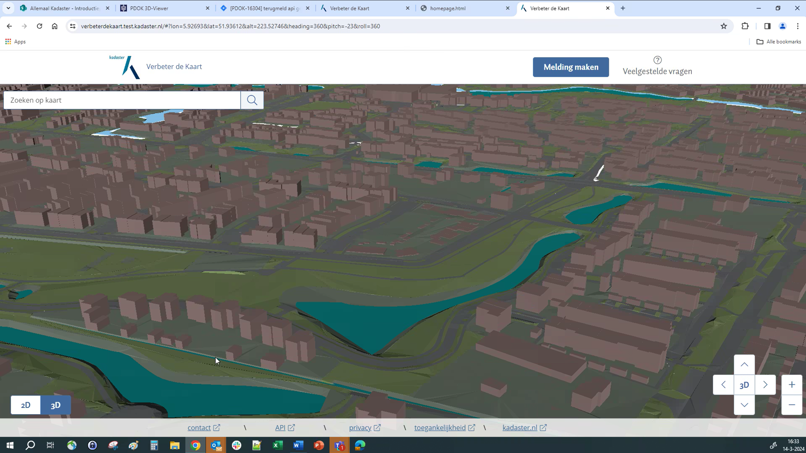Figuur 15Voorbeeld van toepassing kleur en belichting (bron: Kadaster)
Let op: Kleur en belichting is ook gerelateerd aan de shader. De shader bepaalt
namelijk de relatie tussen het materiaal op de 3D-objecten en de belichting.
3.1.4.3 WCAG
Minimaliseer visuele barrières in 3D Tile visualisaties door zo dicht
mogelijk bij de Web Content Accessibility Guidelines (WCAG) te blijven.
Hoewel de visualisatie van 3D Tiles zelf (waarschijnlijk) niet volledig aan de
WCAG-richtlijnen hoeft te voldoen, is het toch aan te raden om zo dicht mogelijk
bij deze richtlijnen te blijven. WCAG staat voor de "Web Content Accessibility
Guidelines" en is een reeks richtlijnen voor het verbeteren van de
toegankelijkheid van webinhoud voor mensen met verschillende handicaps,
inclusief visuele, auditieve, motorische, spraak- en cognitieve beperkingen.
Hoewel de visualisatie van 3D Tiles zelf niet altijd gemakkelijk toegankelijk is
voor alle gebruikers, is het van cruciaal belang dat de interactieve elementen
in de browser, zoals knoppen en eventuele testen in pop-ups, voldoen aan de
WCAG-richtlijnen. Deze richtlijnen helpen ervoor te zorgen dat webinhoud voor
iedereen begrijpelijk en bruikbaar is (figuur 15), ongeacht eventuele beperkingen. Het
naleven van deze richtlijnen verbetert niet alleen de gebruikerservaring voor
mensen met handicaps, maar kan ook bijdragen aan een bredere acceptatie en
bruikbaarheid van de applicatie.
3.1.4.4 Coördinaten van scherm/terrein en camera/doelobject
Houd rekening met coördinaten van scherm/terrein en camera/doelobject
Bij het ontwikkelen van een clienttoepassing met 3D Tiles moet de ontwikkelaar
rekening houden met het verschil tussen schermcoördinaten en terreincoördinaten
bij kaartinteracties zoals klikken op objecten, evenals met de viewpoints
(camerapositie) en focuspoints (doelobject) bij het wisselen tussen 2D en 3D.
Het is essentieel om het verschil tussen schermcoördinaten (x, y) en
terreincoördinaten (geografische coördinaten) te begrijpen bij het implementeren
van klikfunctionaliteit in een kaartvenster met 3D Tiles. Doordat de
schermcoördinaten moeten worden vertaald naar terreincoördinaten, kan het
voorkomen dat een gebruiker op een locatie klikt die overeenkomt met een ander
object dan verwacht, wat tot verwarring kan leiden. Daarom is het nodig om
zorgvuldig om te gaan met de coördinatentransformaties om ervoor te zorgen dat
de juiste objecten worden geselecteerd of aangeklikt.
Bovendien vereist het wisselen tussen 2D- en 3D-weergaven in een
clienttoepassing extra aandacht. Bijvoorbeeld, in een platform zoals Cesium
wordt de 2D-weergave opgebouwd op basis van de camerapositie, niet op basis van
de positie van het object waar naar gekeken werd in de 3D-scene. Dit kan leiden
tot verwarring bij gebruikers, omdat de weergave kan veranderen wanneer er wordt
geschakeld tussen 2D en 3D. Het implementeren van intelligentie en logica om
naadloze overgangen mogelijk te maken tussen 2D- en 3D-weergaven is dus
noodzakelijk om de gebruikerservaring te verbeteren en verwarring te voorkomen.
3.1.4.5 Diepte vlak (depth plane)
Gebruik de instelling depthTestAgainstTerrain=true om objecten realistisch
op de grond te plaatsen en de dieptewaarneming van de scène te verbeteren.
Een "depth plane" fungeert als een referentievlak in een 3D-omgeving,
vergelijkbaar met de grond waarop we lopen in de echte wereld. Het helpt
computers om te begrijpen hoe objecten zich tot elkaar verhouden in de diepte
van een scène, wat cruciaal is voor het realistisch renderen van 3D-beelden.
Stel je voor dat je door een raam naar buiten kijkt. Het glas van het raam zou
het depth plane zijn, en alles wat je daarachter ziet, is wat zich in de echte
wereld buiten bevindt.
Wanneer de instelling depthTestAgainstTerrain = true; wordt ingeschakeld,
wordt aan de computer verteld om rekening te houden met dit depth plane bij het
renderen van objecten. Dit zorgt ervoor dat objecten op een natuurlijke manier
op de grond worden geplaatst, waardoor ze er echt uitzien en passen bij de
omgeving. Het is als het correct plaatsen van een puzzelstukje, waardoor het
perfect past in het geheel en de 3D-scène tot leven komt.
Het activeren van deze instelling verbetert niet alleen de visuele esthetiek van
de 3D-weergave, maar draagt ook bij aan een beter begrip van diepte in de scène.
Bijvoorbeeld, wanneer je een virtuele stad verkent, helpt dit om een gevoel van
afstand en verhoudingen te krijgen, waardoor de ervaring aantrekkelijker en
meeslepender wordt voor de gebruiker. Dit draagt bij aan de algehele
professionele uitstraling van 3D-toepassingen en verhoogt de betrokkenheid van
de gebruiker.
4. Toolkit
4.1 Handleidingen
In deze sectie vind je een verzameling handleidingen en how-to's die je
stapsgewijs begeleiden bij het werken met 3D Tiles. Of je nu een beginner bent
die net begint met het gebruik van 3D Tiles of een ervaren ontwikkelaar die op
zoek is naar geavanceerde tips en technieken, deze handleidingen bieden
praktische instructies en voorbeelden om je te helpen bij het maken, laden,
visualiseren en optimaliseren van 3D-gegevenssets met behulp van 3D Tiles.
4.1.3 HowTo: Genereren van 3D tiles met Virtual City Systems
Bij het genereren van 3D tilesets kunnen een aantal parameters in Virtual City
Systems toegepast worden die invloed hebben op de wijze waarop deze tilesets
getoond worden in een viewer. Deze parameters zijn:
Levels
CityGML Level of Detail (0, 1, 2, 3, 4)
Refinement (Add, Replace)
Object size filter
Geometry generalization
Textures (CityGML Appearance, Single color, Specify colors based on CityGML
classes)
Er is geen aanbeveling mogelijk voor één set aan instellingen, omdat dit
afhankelijk is van de input-data, de visuele presentatie en ook de persoonlijke
smaak. Daarnaast zijn verschillende parameters onderling afhankelijk van elkaar.
4.1.3.1 Levels
Bij deze optie wordt gekozen op welk zoomlevel een tileset wordt aangemaakt. Het
is mogelijk meerdere levels in te stellen, die gezamenlijk een tileset vormen.
Voor elk level moeten dan de hieronder beschreven parameters ingesteld worden.
Levels die vaak gebruikt worden zijn 14, 15 en 16. Het level met het laagste
getal is degene die als eerste wordt geladen in een viewer. De objecten in dit
level liggen verder weg van het viewpoint dan de die in de hogere levels. Bij
het aanmaken van de levels wordt op de achtergrond een Geometric Error toegekend
aan elk level. Het laagste level heeft de hoogste Geometric Error.
4.1.3.2 CityGML Level of Detail
Bij deze optie wordt gekozen welk Level of Detail gebruikt wordt die in de
CityGML-data aanwezig is. Voor gebouwen geldt dat LoD1 een eenvoudig
blokkenmodel is en LoD2 dakvormen heeft. LoD1 bevat minder detail, dus is ook
sneller in te laden. Omdat van veraf minder detail te zien is, kan ervoor worden
gekozen om op een lager zoomlevel LoD1 te gebruiken en in dezelfde tileset op
een hoger zoomlevel LoD2 te gebruiken. Dit kan het laadproces gunstig
beïnvloeden.
Het is ook raadzaam om een fallback LOD in te stellen, zoals LOD1, voor het
geval er geen LOD2 beschikbaar is in de brondataset. In formaten zoals CityGML
of CityJSON kunnen meerdere LODs voor een object worden opgenomen. Als het
voorkeurs LOD niet beschikbaar is, zal het systeem automatisch teruggrijpen naar
het fallback LOD om het object op te nemen in de 3D Tile.
Deze optie is alleen te gebruiken bij de Add refinement. Voor elk zoomlevel kan
een object size gekozen worden, die gebaseerd is op de diagonaal van het object.
Bijvoorbeeld op level 14 alle gebouwen groter dan 100m, op level 15 alle
gebouwen tussen 50m en 100m en op level 16 alle gebouwen kleiner dan 50m.
4.1.3.4 Geometry generalization
Deze optie is alleen te gebruiken bij de Replace refinement. Voor elk zoomlevel
kan een generalisatie toegepast worden, waarbij een marge wordt opgegeven
waarbinnen vertices van een object samengevoegd worden. Bijvoorbeeld op level 14
een generalisatie van 5m, op level 15 van 2m en op level 16 geen generalisatie.
4.1.3.5 Textures
Bij het gebruik van CityGML Appearance kunnen bijvoorbeeld getextureerde
gebouwen aangemaakt worden. Het is niet aan te raden om hierbij LoD1 en 2 te
gebruiken, omdat LoD1 geen textures bevat. Het is wel mogelijk dit met object
size filter óf generalisatie te combineren. Het is verder mogelijk voor
verschillende zoomlevels de kwaliteit van de texture aan te passen, omdat van
veraf minder detail te zien is dan dichtbij.
Als voor Single color wordt gekozen is het wel goed mogelijk LoD1 en LoD2 te
combineren in de verschillende zoomlevels. Er wordt maar één kleur toegepast
voor alle objecten, eventueel met transparantie. Hierbij is het onderscheidt
tussen LoD1 en LoD2 op grote afstand niet te zien.
Bij het gebruik van Specify color based on CityGML classes krijgt elk vlak van
een gebouw zijn eigen kleur, mits ze gespecificeerd zijn in CityGML. Daken
worden bijvoorbeeld rood en muren grijs. Deze kleuren zijn aan te passen. Dit
geldt dan alleen voor LoD2 en hoger en daarom is het niet aan te raden om LoD1
en LoD2 te combineren in verschillende zoomlevels.
4.1.3.6 Refinement
Bij Refinement kan tussen de opties Add en Replace gekozen worden, die aan de
hand van onderstaande scenario’s worden toegelicht.
Als je in de verte kijkt, zie je in principe alleen maar grote gebouwen staan.
De kleine zijn niet zichtbaar doordat ze überhaupt te klein zijn of achter een
groter gebouw staan. Je kunt er dan voor kiezen om in de verte alleen grote
gebouwen te tonen. Iets dichterbij wil je alleen de grote en de middelgrote
gebouwen zien. En heel dichtbij ook de kleine gebouwen. Door de Add refinement
te gebruiken, wordt er een tileset aangemaakt met bijvoorbeeld op zoomniveau 14
de grote gebouwen, op zoomniveau 15 de middelgrote gebouwen en op zoomniveau 16
de kleine gebouwen. Elk gebouw komt maar 1x voor in de gehele tileset. Door het
inzoomen worden steeds meer gebouwen toegevoegd aan je view. Een nadeel is dat
het vaak wel opvalt dat er in de verte gebouwen ontbreken (zie bijvoorbeeld figuur 16).
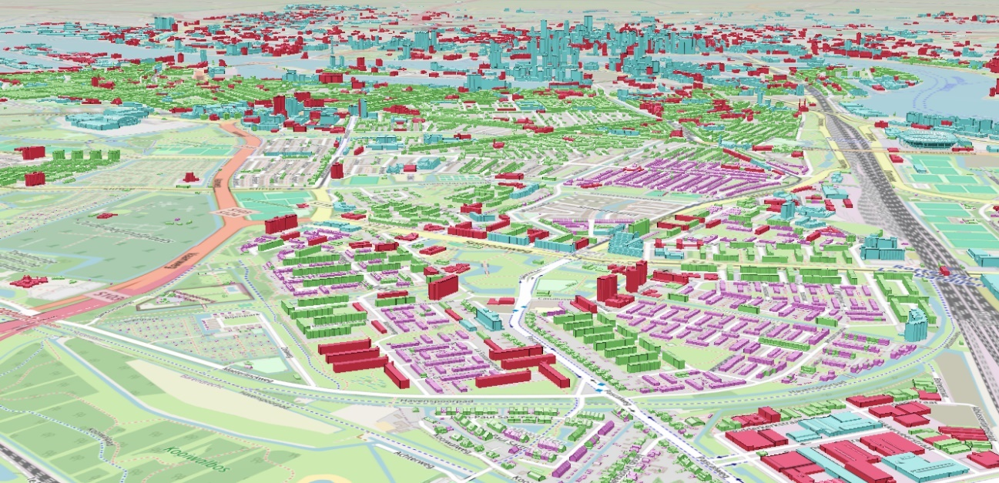Figuur 17Vooorbeeld Refinement toegepast voor gebouwen
Als je in de verte kijkt, zie je weinig detail van gebouwen. Je kunt ervoor
kiezen om de geometrie wat te generaliseren, zodat de tileset minder zwaar
wordt. Bijvoorbeeld op zoomniveau 14 een generalisatie van 5m, op niveau 15 van
2m en op niveau 16 geen generalisatie. Hoe meer je inzoomt, hoe gedetailleerder
een gebouw moet zijn. Wat hier gebeurd is dat elk gebouw op elk zoomniveau
gegenereerd wordt. Elk gebouw komt dus 3x voor. Voordeel is dat je in de verte
altijd alle gebouwen ziet, maar het is vaak lastig in te stellen op welk
zoomniveau, welke generalisatie je toe moet passen. Daardoor blijft de
generalisatie vaak zichtbaar.
4.2 Viewers, generators en servers
In deze sectie vind je een overzicht van verschillende viewers en servers die
compatibel zijn met 3D Tiles. Of je nu op zoek bent naar een krachtige 3D-engine
om je 3D Tiles te visualiseren of een robuuste serveroplossing om je gegevens te
hosten, hier vind je een selectie van tools en platforms die je kunnen helpen
bij het werken met 3D Tiles. Van populaire game-engines tot gespecialiseerde
web-based viewers, deze lijst biedt een breed scala aan opties om aan je
specifieke behoeften te voldoen.
Cesium is een krachtige open-source
JavaScript-bibliotheek voor het maken van 3D-kaarten in de browser. Het biedt
ondersteuning voor het laden en weergeven van 3D Tiles, waardoor gebruikers
complexe 3D-gegevenssets kunnen visualiseren en analyseren in hun
webapplicaties.
Voorbeeld code:
var tileset = viewer.scene.primitives.add(newCesium.Cesium3DTileset({
url : 'tileset.json'
}));
4.2.1.2 Unity
Unity is een populaire game-engine die wordt gebruikt voor
het maken van 3D- en 2D-games, simulaties en visualisaties. Met de Unity engine
kunnen ontwikkelaars 3D Tiles integreren om complexe geografische gegevenssets
te visualiseren en interactieve 3D-omgevingen te creëren.
4.2.1.3 Unreal Engine
Unreal Engine is een krachtige game-engine die
wordt gebruikt voor het maken van hoogwaardige 3D-content, waaronder games,
simulaties en visualisaties. Het ondersteunt de integratie van 3D Tiles,
waardoor ontwikkelaars gedetailleerde en realistische 3D-omgevingen kunnen maken
met behulp van de Unreal Engine.
4.2.1.4 deck.gl
deck.gl is
een op WebGL gebaseerde 3D-rendering-engine die wordt gebruikt voor het maken
van geavanceerde 3D-visualisaties in de browser. Het ondersteunt de weergave van
3D Tiles, waardoor gebruikers gedetailleerde en interactieve 3D-gegevenssets
kunnen bekijken en analyseren.
De Esri JavaScript
API
biedt een krachtig platform voor het maken van webmapping-applicaties. Het
ondersteunt de integratie van 3D Tiles, waardoor ontwikkelaars complexe
3D-gegevenssets kunnen visualiseren en analyseren in hun webapplicaties.
De open source GIS applicatie QGIS biedt een QGIS plugin voor voor de 3D scenes weergave van 3D Tiles datasets. De weergave van een 3D Tiles dataset kan worden aangepast door gebruik te maken van de stylingopties in QGIS. Dit omvat kleurtoewijzing, doorzichtigheid en andere visuele instellingen om de data beter in 3D te presenteren. Een van de voordelen van QGIS is de mogelijkheid om 3D Tiles datasets te combineren met andere GIS-data, zoals vectorlagen, rasterdata, en terreinmodellen. Dit maakt het mogelijk om complexe analyses uit te voeren en rijke visualisaties te creëren in QGIS.
4.2.1.7 3d-tiles-renderer
3DtilesRendererJS is een
JavaScript-bibliotheek die is ontworpen voor het renderen van 3D Tiles in
webapplicaties. Het biedt ondersteuning voor het laden en weergeven van
3D-gegevenssets, waardoor ontwikkelaars gedetailleerde en interactieve
3D-visualisaties kunnen maken in de browser.
Tyler is een innovatieve tool die speciaal is
ontworpen om 3D-tegels te maken van 3D-stadsobjecten. Het biedt een efficiënte
manier om CityJSON-functies om te zetten in geavanceerde 3D Tiles v1.1-formaat,
wat essentieel is voor het visualiseren en beheren van stedelijke gegevens in
drie dimensies.
Tyler neemt CityJSON-functies als invoer, waarbij elke functie afzonderlijk
wordt opgeslagen in een apart bestand. Vervolgens genereert Tyler 3D Tiles v1.1
als uitvoer. De belangrijkste kenmerken van de 3D Tiles-uitvoer zijn:
Binaire glTF (.glb): De inhoud van de tileset is in binair glTF-formaat.
Feature Metadata: De glTF-assets bevatten metadata per CityObject,
gebruikmakend van EXT_mesh_features en EXT_structural_metadata extensies.
Ingekleurde Objecten: De objecten zijn voorzien van standaardkleuren, die
per CityObject-type kunnen worden aangepast.
Compressie: De glTF-bestanden zijn gecomprimeerd met behulp van
KHR_mesh_quantization en EXT_meshopt_compression extensies.
Impliciete Tiling: Ondersteuning voor impliciete tegelstructuren is
optioneel beschikbaar.
4.2.2.2 pg2b3dm
pg2b3dm is een tool waarmee 3D-geometrieën
vanuit PostGIS kunnen worden omgezet naar 3D Tiles. De gegenereerde 3D Tiles
kunnen worden gevisualiseerd in Cesium JS, Cesium for Unreal, Cesium for
Unity3D, Cesium for Omniverse, QGIS, ArcGIS Pro, ArcGIS Maps SDK for JavaScript,
Mapbox GL JS v3 (experimenteel) of andere 3D Tiles client viewers.
4.2.2.3 I3dm.export
I3dm.export i3dm.export is een consoletool waarmee
Instanced 3D Tiles gemaakt kunnen worden vanuit een PostGIS-tabel met punt geometrie. Deze tegels bevatten
informatie over locatie, binair glTF-model (glb), schaal, rotatie en instantie-attributen.
Zowel 3D Tiles 1.0 (via i3dm’s) als 3D Tiles 1.1 (via glTF extensie EXT_mesh_gpu_instancing) kunnen worden
gegenereerd.
4.2.2.4 VCS
Virtual City Systems biedt een krachtige tool voor het
genereren van 3D Tiles genaamd "CityServer3D". Met CityServer3D kunnen
gebruikers eenvoudig 3D-gegevens van verschillende bronnen importeren en
converteren naar het 3D Tiles-formaat. De gegenereerde 3D Tiles kunnen
vervolgens worden geïntegreerd in verschillende 3D-georuimtelijke toepassingen
en worden gevisualiseerd in populaire 3D Tiles-clients zoals Cesium, Mapbox GL
JS en andere. CityServer3D biedt ook geavanceerde functionaliteiten voor het
beheren, analyseren en presenteren van 3D-gegevens op schaalbare en efficiënte
wijze.
4.2.2.5 3D GeoVolumes
De OGC API – 3D GeoVolumes is een
krachtige serveroplossing voor het serveren van 3D Tiles. Met deze server kunnen
3D-gegevenssets efficiënt worden gehost en toegankelijk gemaakt voor gebruik in
verschillende 3D-applicaties. Door het gebruik van de OGC API-standaard kunnen
3D Tiles datasets eenvoudig worden gepubliceerd en gedeeld met andere
gebruikers. GeoVolumes biedt een robuuste infrastructuur voor het leveren van
3D-gegevens op schaal, waardoor het ideaal is voor het hosten van grote
3D-modellen en het ondersteunen van geavanceerde 3D-toepassingen.
4.3 3D Tile Datasets en websites
4.3.1 3D basisvoorziening Kadaster
De 3D Basisvoorziening van het
Kadaster is
beschikbaar op schaalniveaus tussen 1:500 en 1:10.000. De gegevens worden
geleverd als dataset per kaartblad, waarbij u zelf het gewenste kaartblad kunt
selecteren op de kaart van Nederland. De gegevens worden geleverd in een
zip-bestand, waarin een CityJSON-bestand is opgenomen. Een kaartbladbestand van
het 3D Basisbestand Volledig is ongeveer 200-700 MB groot. De kaartbladbestanden
van het 3D Basisbestand Gebouwen zijn aanzienlijk kleiner, terwijl het 3D
Hoogtestatistieken Gebouwen als één bestand voor heel Nederland wordt geleverd
in GeoPackage 1.2.
De 3D Basisvoorziening kan worden toegepast voor verschillende doeleinden, zoals
het maken van 3D-visualisaties, het uitvoeren van analyses van geluidsmodellen,
schaduwanalyses, analyse van zonnepotentie en afwateringsberekeningen. Het vormt
tevens een belangrijke basis voor gemeenten bij de planvorming en uitvoering van
projecten in het kader van de nieuwe Omgevingswet. Daarnaast is het een
waardevol visueel hulpmiddel in de communicatie met burgers over de impact van
plannen op de omgeving.
4.3.2 3D Tiles Nederland
3DTilesNederland.nl is een
samenwerkingsverband tussen de Vereniging van Nederlandse Gemeenten (VNG) en de
gemeenten Rotterdam, Amsterdam en Den Haag. De website zet zich in om het
verzamelen, beheren en benutten van 3D-data binnen gemeenten te bevorderen en te
ondersteunen.
Het streven is om gemeenten te helpen bij het gestandaardiseerd beschikbaar
stellen van lokaal ingewonnen 3D-data door gebruik te maken van de
internationale 3D Tiles-standaard. De website biedt praktische handleidingen,
instructies en ondersteuning voor het maken, publiceren en delen van
gedetailleerde 3D-modellen van steden, inclusief praktische informatie over het
benaderen van gepubliceerde 3D-data.
Daarnaast biedt 3DTilesNederland.nl verschillende tools zoals CesiumJS, Unreal
en Unity (Netherlands 3D) waarmee gemeenten realistische virtuele tours,
simulaties en trainingen kunnen ontwikkelen om burgers te informeren en
betrekken bij stadsplanning en andere gemeentelijke projecten.
4.3.3 Netherlands3D
Netherlands3D is een open-source Digitaal
Twin-framework dat is ontworpen voor Nederland. Met Netherlands3D kun je
gedetailleerde, op data gebaseerde modellen maken door middel van data
visualisatie.


{kind=link}